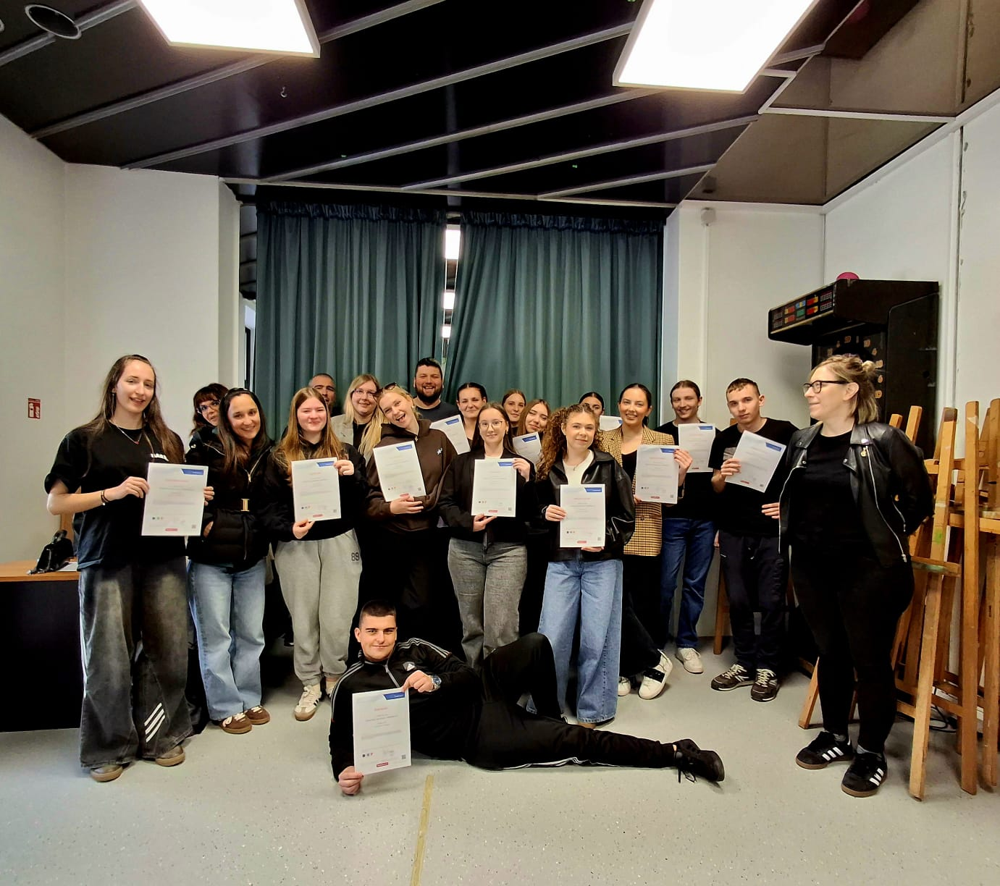

Inicijativa koja pokreće novu energiju, povezuje ideje i stvara prostor za stvarne promjene u društvu.
Puls mladih je građanska inicijativa koja pokreće novu energiju, povezuje ideje i stvara prostor za stvarne promjene u društvu.
Baziramo se u Splitu i okolici te okupljamo mlade ljude koji žele aktivno sudjelovati u oblikovanju zajednice — kroz projekte, dijalog i zajedničko djelovanje.
Povezivati mlade i njihove ideje s konkretnim mogućnostima za promjenu u lokalnoj zajednici.
Kroz suradnju, dijalog i zajednički rad gradimo inicijativu koja odražava stvarne potrebe mladih.
Najnovije vijesti, članci i fotografije iz svijeta Pulsa mladih.
3. ožujka 2026.
Svi znamo tu scenu: svaki razred izabere svog predsjednika. Ali kad se zatvore vrata zbornice, postavlja se pitanje — vrijedi li njihova riječ stvarno?
Pročitaj više →
1. ožujka 2026.
Sudjelovali smo na završnici projekta "GOOSKA – Građanski odgoj i obrazovanje sekcija Karlovac"...
Pročitaj više →22. veljače 2026.
Pripremamo anketu o potrebama mladih. Vaše mišljenje nam je važno!
Ispuni anketu →22. veljače 2026.
Tražimo nove članove. Ako želiš sudjelovati, javi nam se!
Pridruži se →Upoznajte ljude koji pokreću Puls mladih.
Sadržaj ove sekcije se priprema. Pratite nas za više informacija o našem timu i njihovim ulogama.
Imate pitanja ili želite surađivati? Tu smo za vas.
Priključi se timu mladih koji zajedno grade bolju budućnost. Svaki glas je važan.
Priključi se →